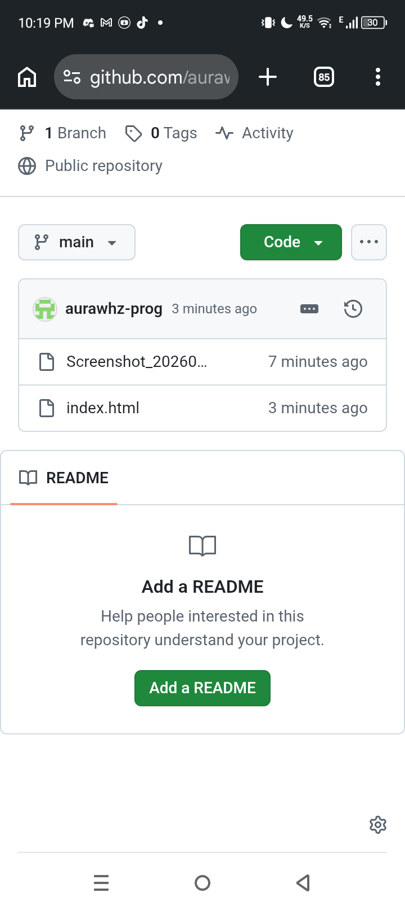

Project Showcase
Pizza Store & Street Project
A complete overhaul of the Pizza area, featuring custom textures, realistic object placement, and optimized lighting for Samp maroc.
Professional SAMP Environment Designer & Developer
I am Fello, a dedicated SAMP Mapper and developer with years of experience in creating high-quality virtual environments. I specialize in crafting custom interiors, detailed exterior re-designs, and specialized faction bases that provide players with a unique roleplay experience.
Using advanced tools like Texture Studio and Pawn scripting, I ensure that every project is not only beautiful but also optimized for server performance.
A complete overhaul of the Pizza area, featuring custom textures, realistic object placement, and optimized lighting for Samp maroc.